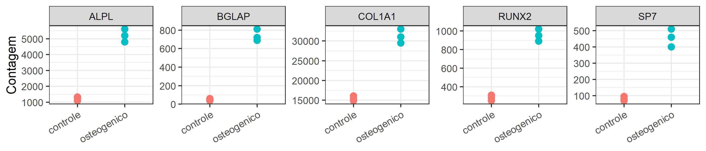

Introdução a programação com a linguagem R
Introdução à Bioinformática | UNESP 2026
2026-10-06
Sobre a linguagem R
Criada em 1993 por Ross Ihaka e Robert Gentleman na Universidade de Auckland;
Originalmente focada em análises estatísticas;
Open source;
Atualmente na versão
4.6.1;
Comunidade incrível e atuante

CRAN
The Comprehensive R Archive Network;
Para baixar e instalar no seu computador: https://cran.r-project.org/
Você baixar pode pacotes e submeter novos pacotes;
Onde programar?
Bioconductor
Repositório de pacotes para bioinformática em R;
A base da linguagem
No R, tudo que existe é um objeto e tudo que acontece é uma função;
Guardamos valores em objetos com o operador de atribuição
<-;
[1] "character"
[1] "logical"Funções
Toda função tem a mesma cara:
nome(argumentos);Os argumentos têm nome e, muitas vezes, um valor padrão;
[1] 3
[1] 3.14
[1] 3.14
[1] 4
[1] "ATGC"
[1] 9- Com os nomes, a ordem dos argumentos deixa de importar;
Pedindo ajuda
Como ler uma página de ajuda
Todas têm a mesma estrutura: Description, Usage, Arguments, Value e Examples. Na dúvida, comece pelos exemplos.
- Fora do R: Stack Overflow, Posit Community, suporte do Bioconductor e os assistentes de IA;
Instalando pacotes
Instalar é comprar o livro; carregar com
library()é tirá-lo da estante;pacote::funcao()usa uma função sem carregar o pacote inteiro;
Gerando dados aleatórios
rnorm()sorteia valores de uma distribuição normal. Da mesma família:runif(),rbinom(),rpois()esample();
[1] 9.675 12.642 11.185 12.464 10.007[1] 14.019 10.554 8.051 11.622 13.866Reprodutibilidade: set.seed()
- Fixar a semente faz o sorteio dar sempre o mesmo resultado;
[1] 11.041 7.841 10.278 9.831 8.667[1] 11.041 7.841 10.278 9.831 8.667Em análises reais
Fixe a semente sempre que houver sorteio: simulações, bootstrap, UMAP, t-SNE, k-means.
Simulando um experimento
- A expressão (em log2) de um gene em 10 amostras controle e 10 tratadas;
[1] 7.42
[1] 9.293Olhando os dados
Teste t
- As médias dos dois grupos são diferentes, ou a diferença pode ser obra do acaso?
Welch Two Sample t-test
data: tratado and controle
t = 4.3, df = 17, p-value = 4e-04
alternative hypothesis: true difference in means is not equal to 0
95 percent confidence interval:
0.960 2.787
sample estimates:
mean of x mean of y
9.293 7.420 - Olhe para o valor de p, o intervalo de confiança da diferença e as médias;
Estruturas de dados
| Um único tipo | Tipos diferentes | |
|---|---|---|
| 1 dimensão | vetor | lista |
| 2 dimensões | matriz | data frame |
Quase toda análise em bioinformática é feita com essas quatro estruturas;
Um FASTA, um BED, um VCF, uma matriz de contagens: ao entrar no R, todos viram uma delas;
Vetores
Sequência ordenada de elementos do mesmo tipo;
É a estrutura mais básica do R: um valor sozinho já é um vetor de tamanho 1;
Criados com a função
c(), de combinar;
Vetores: tipos
[1] "character"[1] "numeric"[1] "logical"character: nomes de genes, sequências, identificadores de amostras;numeric: contagens, expressão, posições no genoma, valores de p;logical: respostas de sim ou não (o gene é significativo? a amostra passou no controle de qualidade?);
Vetores: um tipo só
Se os tipos forem misturados, o R converte tudo para o mais flexível:
logical→numeric→character;É por isso que a coluna de cromossomos de um arquivo quase sempre é lida como texto (X, Y, MT);
Não dá para fazer contas com texto:
"6" + 1é um erro;
Vetores: operações
- As operações são aplicadas a todos os elementos de uma vez, sem precisar de loop;
[1] 7.972 6.340 10.367 13.911 5.524[1] 1.4624 0.4680 7.7216 90.0848 0.2632[1] TRUE FALSE TRUE TRUE FALSEVetores: funções de resumo
Vetores: indexação
- Usamos colchetes
[ ]. No R, a contagem começa em 1;
[1] "RUNX2"[1] "RUNX2" "ALPL" [1] "SP7" "ALPL" "COL1A1" "BGLAP" [1] "RUNX2" "ALPL" "COL1A1"Vetores: nomes
- Os elementos de um vetor podem ter nomes, e podemos indexar por eles;
Vetores: perguntas do dia a dia
Vetores: sequências
- Atalhos para criar vetores sem digitar elemento por elemento;
Vetores: valores ausentes
NArepresenta um dado ausente, e qualquer conta comNAdevolveNA;
[1] NA[1] 24.3[1] FALSE FALSE TRUE FALSEFatores
- Vetores para variáveis categóricas: grupo experimental, sexo, genótipo, lote;
[1] controle controle controle osteogenico osteogenico osteogenico
Levels: controle osteogenico
condicao
controle osteogenico
3 3 - A ordem dos níveis define o grupo de referência nos modelos (DESeq2, limma);
Matrizes
Um vetor com duas dimensões: linhas e colunas;
Todos os elementos são do mesmo tipo;
O exemplo clássico: a matriz de contagens (genes × amostras);
contagens <- matrix(
c( 250, 310, 280, 890, 1020, 950,
80, 95, 70, 400, 460, 510,
1320, 1100, 1250, 5200, 4800, 5600,
15400, 14900, 16100, 31000, 29500, 33000,
45, 60, 38, 720, 810, 690),
nrow = 5, byrow = TRUE,
dimnames = list(
genes,
c("ctrl_1", "ctrl_2", "ctrl_3", "osteo_1", "osteo_2", "osteo_3")
)
)Matrizes: a matriz de contagens
ctrl_1 ctrl_2 ctrl_3 osteo_1 osteo_2 osteo_3
RUNX2 250 310 280 890 1020 950
SP7 80 95 70 400 460 510
ALPL 1320 1100 1250 5200 4800 5600
COL1A1 15400 14900 16100 31000 29500 33000
BGLAP 45 60 38 720 810 690[1] 5 6[1] "RUNX2" "SP7" "ALPL" "COL1A1" "BGLAP" [1] "ctrl_1" "ctrl_2" "ctrl_3" "osteo_1" "osteo_2" "osteo_3"Matrizes: indexação
- Agora são dois índices:
[linha, coluna]. Deixar um deles vazio significa “todos”;
ctrl_1 ctrl_2 ctrl_3 osteo_1 osteo_2 osteo_3
250 310 280 890 1020 950 RUNX2 SP7 ALPL COL1A1 BGLAP
890 400 5200 31000 720 osteo_1 osteo_2 osteo_3
SP7 400 460 510
BGLAP 720 810 690Matrizes: operações
ctrl_1 ctrl_2 ctrl_3 osteo_1 osteo_2 osteo_3
17095 16465 17738 38210 36590 40750 RUNX2 SP7 ALPL COL1A1 BGLAP
616.7 269.2 3211.7 23316.7 393.8 ctrl_1 ctrl_2 ctrl_3 osteo_1 osteo_2 osteo_3
RUNX2 8.0 8.3 8.1 9.8 10.0 9.9
SP7 6.3 6.6 6.1 8.6 8.8 9.0
ALPL 10.4 10.1 10.3 12.3 12.2 12.5
COL1A1 13.9 13.9 14.0 14.9 14.8 15.0
BGLAP 5.5 5.9 5.3 9.5 9.7 9.4Matrizes: da matriz ao heatmap

Data frames
Uma tabela: cada coluna é um vetor, e cada coluna pode ter um tipo diferente;
Todas as colunas têm o mesmo comprimento;
Linhas são observações (amostras, genes, variantes) e colunas são variáveis;
Em bioinformática: tabela de amostras, anotação de genes, arquivos BED, VCF e GTF, resultados de expressão diferencial;
Data frames: a tabela de amostras
amostra condicao dia rin
1 ctrl_1 controle 0 9.1
2 ctrl_2 controle 0 8.7
3 ctrl_3 controle 0 9.3
4 osteo_1 osteogenico 14 9.4
5 osteo_2 osteogenico 14 7.2
6 osteo_3 osteogenico 14 8.9Data frames: inspecionando
'data.frame': 6 obs. of 4 variables:
$ amostra : chr "ctrl_1" "ctrl_2" "ctrl_3" "osteo_1" ...
$ condicao: chr "controle" "controle" "controle" "osteogenico" ...
$ dia : num 0 0 0 14 14 14
$ rin : num 9.1 8.7 9.3 9.4 7.2 8.9[1] 6 4[1] "amostra" "condicao" "dia" "rin" Data frames: acessando
[1] 9.1 8.7 9.3 9.4 7.2 8.9 amostra condicao dia rin
2 ctrl_2 controle 0 8.7 amostra rin
1 ctrl_1 9.1
2 ctrl_2 8.7
3 ctrl_3 9.3
4 osteo_1 9.4
6 osteo_3 8.9Data frames: criando colunas
amostra condicao dia rin aprovada biblioteca
1 ctrl_1 controle 0 9.1 TRUE 17095
2 ctrl_2 controle 0 8.7 TRUE 16465
3 ctrl_3 controle 0 9.3 TRUE 17738
4 osteo_1 osteogenico 14 9.4 TRUE 38210
5 osteo_2 osteogenico 14 7.2 FALSE 36590
6 osteo_3 osteogenico 14 8.9 TRUE 40750- Matriz de contagens + tabela de amostras: a base de quase toda análise de RNA-seq;
Data frames: lendo arquivos
- Na prática, raramente digitamos um data frame: ele vem de um arquivo;
Depois de ler qualquer arquivo
Rode head(), str() e summary() antes de fazer qualquer outra coisa.
Listas
Um vetor “genérico”: cada elemento pode ser qualquer coisa, de qualquer tamanho;
Em bioinformática: conjuntos de genes (vias), resultados de testes estatísticos, objetos do Bioconductor;
List of 3
$ osteogenese : chr [1:4] "RUNX2" "SP7" "ALPL" "BGLAP"
$ matriz_extracelular: chr [1:5] "COL1A1" "COL1A2" "SPARC" "FN1" ...
$ glicolise : chr [1:3] "HK2" "PKM" "LDHA"Listas: acessando
[1] "HK2" "PKM" "LDHA"[1] "RUNX2" "SP7" "ALPL" "BGLAP"$osteogenese
[1] "RUNX2" "SP7" "ALPL" "BGLAP"[[ ]]e$devolvem o conteúdo;[ ]devolve outra lista;
Listas: aplicando funções
sapply()aplica uma função a cada elemento da lista;
osteogenese matriz_extracelular glicolise
4 5 3 osteogenese matriz_extracelular glicolise
4 1 0 - Essa pergunta é o ponto de partida de uma análise de enriquecimento;
Listas: resultados são listas
- Lembra do
teste, o resultado dot.test()? Ele é uma lista;
[1] "statistic" "parameter" "p.value" "conf.int" "estimate"
[6] "null.value" "stderr" "alternative" "method" "data.name" [1] 0.0004489mean of x mean of y
9.293 7.420 - Quase toda função de análise devolve uma lista; saber extrair elementos dela é essencial;
Listas: juntando tudo
List of 4
$ projeto : chr "MSC_osteo_2026"
$ contagens: num [1:5, 1:6] 250 80 1320 15400 45 310 95 1100 14900 60 ...
..- attr(*, "dimnames")=List of 2
$ amostras :'data.frame': 6 obs. of 6 variables:
$ vias :List of 3- É essa a lógica dos objetos do Bioconductor, como o
SummarizedExperiment: contagens, amostras e anotação em um objeto só;
Resumo das estruturas
| Estrutura | Dimensões | Tipos | Exemplo em bioinformática |
|---|---|---|---|
| Vetor | 1 | um só | expressão de um gene |
| Matriz | 2 | um só | contagens (genes × amostras) |
| Data frame | 2 | um por coluna | tabela de amostras, BED, VCF |
| Lista | 1 | qualquer | vias, resultado de um teste |
Criando funções: por quê?
Copiou e colou o mesmo código pela terceira vez? É hora de escrever uma função;
Menos repetição, menos erros: a correção é feita em um lugar só;
Um bom nome documenta o código:
conteudo_gc(sequencia)se explica sozinho;É o primeiro passo da automatização: a mesma análise para 1 ou para 10.000 sequências;
Sequências de DNA são texto
[1] 26 [1] "A" "T" "G" "G" "C" "G" "T" "A" "C" "G" "C" "T" "T" "A" "G" "G" "C" "T" "A"
[20] "A" "C" "G" "G" "T" "C" "A"strsplit()devolve uma lista: por isso o[[1]]para pegar o conteúdo;Com as bases em um vetor, vale tudo o que já vimos: indexar, contar, comparar;
Conteúdo GC: passo a passo
- Antes de escrever a função, resolvemos o problema para uma sequência;
[1] FALSE FALSE TRUE TRUE TRUE TRUE FALSE FALSE TRUE TRUE TRUE FALSE
[13] FALSE FALSE TRUE TRUE TRUE FALSE FALSE FALSE TRUE TRUE TRUE FALSE
[25] TRUE FALSE[1] 53.85Conteúdo GC: a função
- 1
- O nome da função e, entre parênteses, os argumentos: o que muda a cada uso;
- 2
-
O corpo: os mesmos passos de antes, agora com
toupper()para aceitar minúsculas; - 3
- A última linha é o resultado que a função devolve;
Reverso complementar
[1] "GGCCAT"[1] TRUE- Teste sempre com um caso em que você já sabe a resposta;
Tm de um primer
- A regra de Wallace, para oligos curtos: \(Tm = 2 × (A + T) + 4 × (G + C)\);
[1] 40Funções que tomam decisões: if e else
- Por convenção, Wallace vale até 13 nt; para primers mais longos, usa-se outra fórmula;
tm_primer <- function(primer) {
bases <- strsplit(toupper(primer), "")[[1]]
n <- length(bases) # tamanho do primer
n_gc <- sum(bases %in% c("G", "C")) # quantas bases G ou C
if (n < 14) {
tm <- 2 * (n - n_gc) + 4 * n_gc # regra de Wallace
} else {
tm <- 64.9 + 41 * (n_gc - 16.4) / n # fórmula para primers mais longos
}
round(tm, 1)
}Automatizando: muitas sequências
- As nossas funções analisam uma sequência por vez;
sapply()repete o trabalho para cada elemento;
P1_F P1_R P2_F P2_R
55.0 50.0 88.9 15.0 P1_F P1_R P2_F P2_R
53.8 51.8 64.0 37.4 Do vetor de primers à tabela
primer tamanho gc tm
1 P1_F 20 55.0 53.8
2 P1_R 20 50.0 51.8
3 P2_F 18 88.9 64.0
4 P2_R 20 15.0 37.4 primer tamanho gc tm
1 P1_F 20 55 53.8
2 P1_R 20 50 51.8Receita para escrever uma função
Resolva o problema para um caso, passo a passo;
Identifique o que muda de um caso para outro: esses são os argumentos;
Embrulhe os passos em
function()e dê um nome que diga o que ela faz;Teste com casos em que você já sabe a resposta;
Aplique a muitos casos com
sapply();
Na vida real
Essas fórmulas de Tm são aproximações didáticas. Ferramentas como o Primer3 usam o modelo de vizinhos mais próximos (nearest-neighbor), que considera a concentração de sais e de primers.
Tidyverse
Coleção de pacotes para ciência de dados que compartilham a mesma filosofia, gramática e estrutura de dados;
Instalar:
install.packages("tidyverse");Carregar, a cada sessão:
| Pacote | Para quê |
|---|---|
readr |
importar arquivos |
tidyr |
organizar tabelas |
dplyr |
transformar e resumir |
ggplot2 |
visualizar |
stringr |
trabalhar com texto |
purrr |
aplicar funções a listas |
Tidyverse: R base × dplyr
R base
- O pipe
|>(ou%>%) lê-se “e então”: o código fica na ordem em que pensamos;
Tidyverse: dados tidy
- Cada variável é uma coluna, cada observação é uma linha, cada valor é uma célula;
# A tibble: 4 × 8
gene amostra contagem condicao dia rin aprovada biblioteca
<chr> <chr> <dbl> <chr> <dbl> <dbl> <lgl> <dbl>
1 RUNX2 ctrl_1 250 controle 0 9.1 TRUE 17095
2 RUNX2 ctrl_2 310 controle 0 8.7 TRUE 16465
3 RUNX2 ctrl_3 280 controle 0 9.3 TRUE 17738
4 RUNX2 osteo_1 890 osteogenico 14 9.4 TRUE 38210Tidyverse: do dado ao gráfico

Lista de atividades
Lista de problemas:
Resolução:
Obrigado!
marcel.ferreira@unesp.br